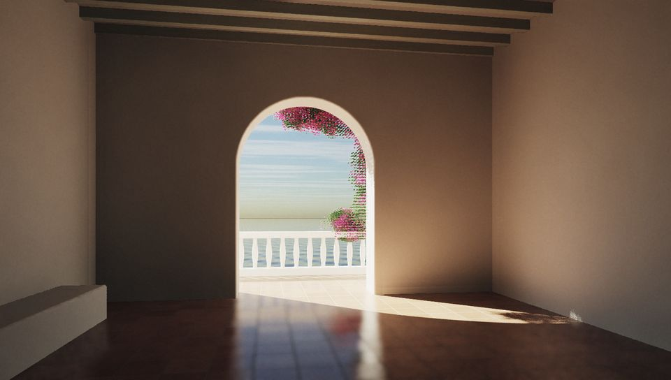
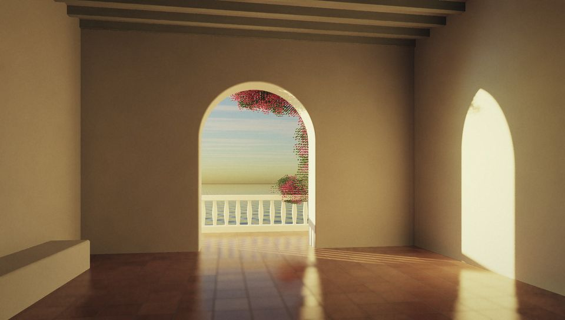
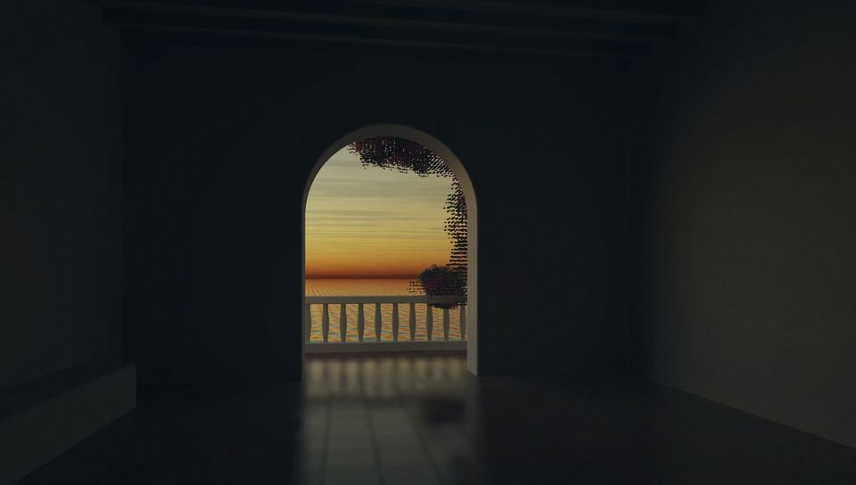
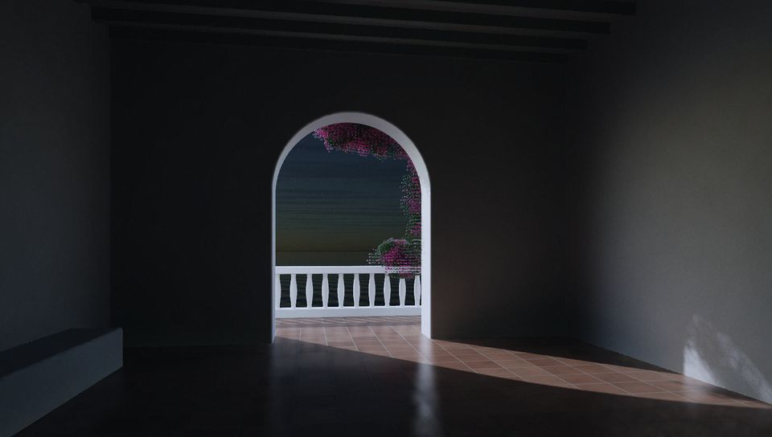
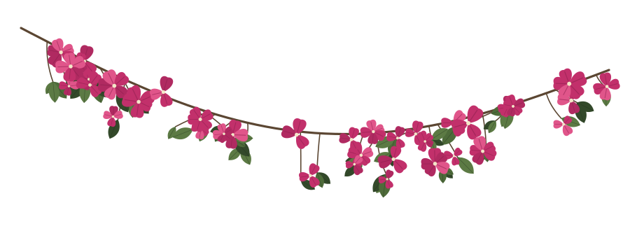
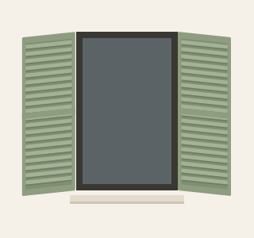
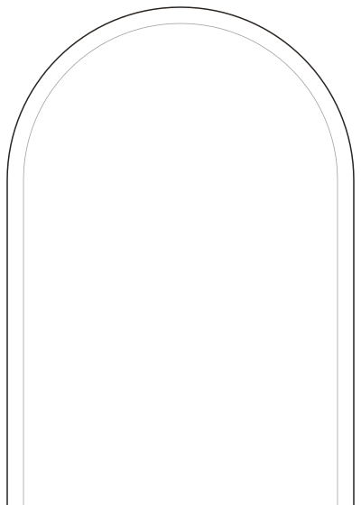
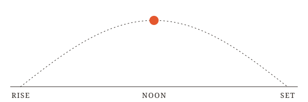
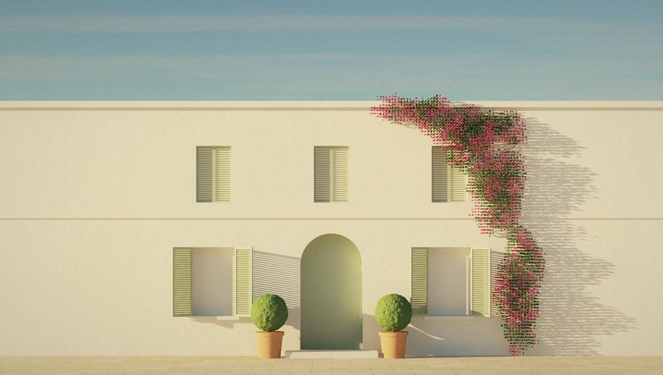

Albretsen
Software that pays for itself
Albretsen
Software that pays for itself
Direction
A whitewashed house on a warm coast, photographed at the hour when the light is low and long. Everything is still except the sun. The sky on the page follows the real sun over Norway, so the site is never quite the same twice.
The products sit in the architecture like objects set into a wall: one niche each, each at its own hour. No postcards, no tourist props. Plaster, light, a few flowers, and work.
Hero B · facade, morning

Signature delight
Four renders of hero A. interactive/sky.js reports the sun's phase in Norway (night, blue, golden, day); the site shows the matching plate. The highlighted one is the current phase.




Interactive · interactive/sky.js
A physically based sky (Rayleigh, Mie and ozone) for where the sun is over Norway right now, drawn in a WebGL2 shader at reduced resolution and redrawn once a minute. It also writes --sky-zenith, --sky-horizon, --sun-color and --sky-phase, so the page can follow the light. Drag to try other hours. Full-screen demo.
Products
One niche, four hours. The real product icons, unaltered, mounted as glazed plaques. The light tells the status: live products in daylight, the paused one at dusk.
Small arched stand-ins in the same language. Luma keeps its real logo.
Identity
The mark is a round-headed arch whose crossbar is the horizon, with the sun resting on it. The wordmark is EB Garamond at weight 470, outlined.

wordmark-currentcolor.svgPalette
Type · EB Garamond (OFL), self-hosted, variable 400–800 + italic
Albretsen
Quiet software that pays for itself.
Small caps label · tracked 0.24em
Body at 18/28. A classic book face, set generously: the voice is calm and exact. Garamond's old-style figures sit inside the text like words: since 2016, 113,000+ installs, 17 tools.
0123456789 · $782 · 549
0123456789 · $782 · 549 lining, tabular
Pair with the system monospace for commands only: claude mcp add albretsen https://albretsen.no/mcp
Extras



arch-mask.svg for CSS masks
Motion · motion.css + motion.js

--sun-t. Live, it follows today's sunrise to sunset in Norway (sunClock()).Light comes in long. The words stay where they are.
animation-timeline: view(), JS fallback).Hover
A pool of warm light drifts after the pointer, slowly. The card never lifts.